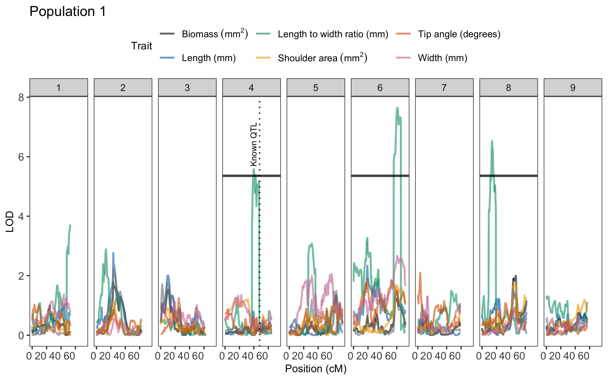

geneticMapR simplifies the construction of genetic maps. Built on top of MapRtools and R/qtl for reproducible analysis. Optimized for F2 diploid plant populations. Some functions were generalized for different experimental populations and polyploids. geneticMapR was designed to help with reproducible genetic map construction and quantitative trait loci (QTL) analysis.
Installation
You can install the development version of geneticMapR from GitHub with:
# Get devtools if needed
if (!requireNamespace("devtools", quietly = TRUE)) {
install.packages("devtools")
}
#Install geneticMapR
devtools::install_github("vegaalfaro/geneticMapR")
# Load library
library(geneticMapR)Usage
The example shows how to recode markers when neither parent is the reference genome, as is common with GBS data. Molecular markers (SNPs) must be phased to accurately trace allele inheritance in the progeny. recode is a general function that can help with that:
Recode
# Load the example dataset
data("simulated_geno")
# Check markers previous to recoding
print(simulated_geno)
#> Parent1 Parent2 F2_1 F2_2 F2_3
#> Marker1 0 2 0 1 2
#> Marker2 2 0 2 0 1
#> Marker3 0 2 1 2 1
#> Marker4 2 0 2 0 0
#> Marker5 0 2 0 2 1
#> Marker6 2 0 2 0 0
# Recode the markers using the recode() function
phased <- geneticMapR::recode(simulated_geno, parent1 = "Parent1", parent2 = "Parent2")
# Print the output
print(phased)
#> Parent1 Parent2 F2_1 F2_2 F2_3
#> Marker1 0 2 0 1 2
#> Marker2 0 2 0 2 1
#> Marker3 0 2 1 2 1
#> Marker4 0 2 0 2 2
#> Marker5 0 2 0 2 1
#> Marker6 0 2 0 2 2Visualization
This function generates a QTL trace plot to visualize significance scores across chromosomes for one or more traits. It highlights QTL peaks and overlays customizable vertical lines
library(geneticMapR)
data("qtl_example")
plot_qtl_trace(qtl_df = qtl_example$qtl_df,
thresholds_df = qtl_example$thresholds,
vline_df = qtl_example$vline,
use_physical_pos = FALSE,
x_angle = 0,
trait_colors = qtl_example$colors,
trait_labels = qtl_example$labels,
plot_title = "Population 1")
Documentation
For detailed documentation and examples, visit geneticMapR